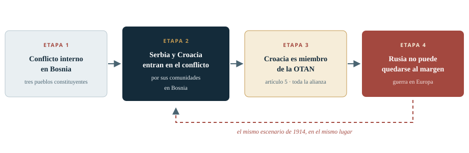
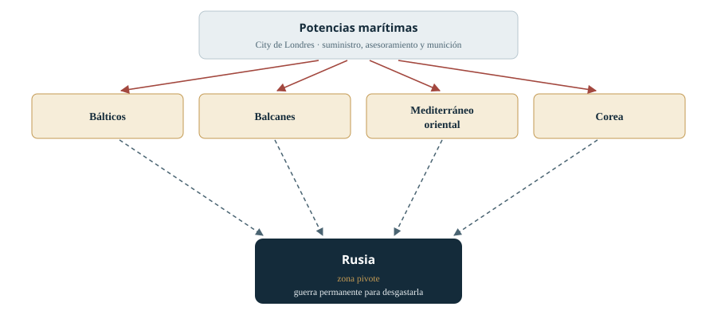
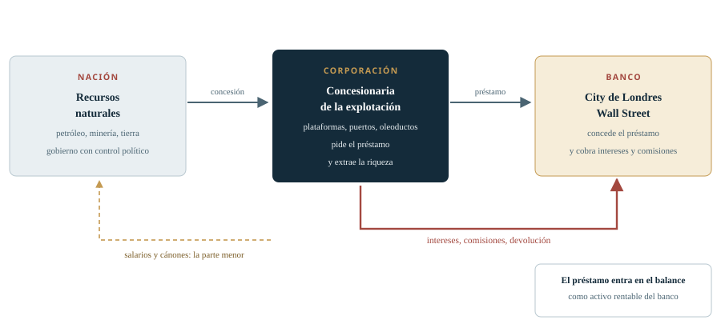

La tesis: un imperio que se reencarnó en la City ¶
Alex Krainer sostiene que el imperio británico no terminó con la descolonización, sino que se convirtió en una red financiera transnacional. La entrevista reconstruye primero un caso concreto —la guerra de Yugoslavia— y después el mecanismo general que, según él, produce esos conflictos y extrae riqueza de la periferia.
El punto de partida es personal. Krainer, croata de origen, se ofreció voluntario para el servicio militar con poco más de veinte años y participó en la guerra sin resultar herido. De allí salió con una pregunta que ha guiado buena parte de su investigación durante tres décadas: cómo fue posible una guerra que, una semana antes de empezar, casi todo el mundo habría considerado imposible. Su respuesta es que alguien agitó el tarro: una estructura de poder externa, que identifica con el imperio británico, azuzó una fractura que existía pero permanecía inactiva.
La segunda parte del argumento es el mecanismo. Para Krainer, el imperio no se sostiene hoy por conquista territorial, sino por deuda garantizada con recursos ajenos. Una nación cede derechos de explotación; una corporación se endeuda con esos derechos como garantía; el banco anota el préstamo como activo y cobra intereses y comisiones durante décadas. La corporación es, en su imagen, la cinta transportadora; quien más gana es el banco, que nunca toca el petróleo.
Tesis central
«Es un imperio de banqueros, no cabe ninguna duda», afirma el entrevistado. La continuidad del poder británico no se explica por el territorio, sino por el control del crédito, del derecho que lo hace exigible y de las decisiones políticas que permiten firmarlo. 28:38
-
Continuidad
El imperio no se disolvió
Sobrevive como red de intereses bancarios que coopta a las naciones anfitrionas —Gran Bretaña, Estados Unidos u otras— sin depender de ninguna en particular.
-
Caso
Yugoslavia, 1991
El entrevistado lee la guerra como un conflicto inducido desde fuera, con un papel británico oculto tras una narrativa que atribuye la responsabilidad a Estados Unidos.
-
Método
El banco en el centro
El préstamo crea el activo, el activo exige garantía y la garantía exige control político. La violencia aparece cuando ese control se resiste.
Nota de alcance. Este informe reconstructivo expone las tesis de Alex Krainer tal como él las formula, sin refutarlas ni completarlas con posiciones ajenas. Cuando el entrevistado atribuye intenciones, autorías o causalidades —por ejemplo, sobre el papel británico en la guerra de Yugoslavia o sobre la muerte de Enrico Mattei— el texto lo presenta como su lectura, no como un hecho acreditado. Los datos que cita de terceros y no aporta con referencia se señalan como no verificados.
Fuente audiovisual ¶
La entrevista se publicó en el canal Neutrality Studies Español y se grabó en inglés; la transcripción utilizada es su versión automática al español. El reproductor se incrusta en la modalidad de privacidad mejorada de YouTube: solo carga si hay conexión. Todo el contenido del informe es legible sin el vídeo.
El imperio no muerto contraataca: cómo Reino Unido aún gobierna el mundo
Segunda conversación de Alex Krainer con Pascal en Neutrality Studies. Retoma la idea del «imperio no muerto» y la extiende a los Balcanes, al mecanismo financiero del crédito y a la disputa interna entre Londres y Washington.
- Canal
- Neutrality Studies Español
- Participantes
- Alex Krainer (entrevistado) · Pascal (entrevistador)
- Idioma
- Inglés, con transcripción automática al español
- Duración
- 1:12:24, según la transcripción
- Publicación
- No verificada
Capítulos y momentos del vídeo
Cada capítulo del informe remite al instante en que se trata el asunto. Las marcas proceden de la transcripción automática: son fiables al minuto, no al segundo, y pueden desviarse unos segundos respecto del audio original.
| Inicio | Asunto | Apartado del informe |
|---|---|---|
| 00:01 | Presentación y planteamiento de la hipótesis | Capítulo 1 |
| 02:49 | El tarro de las hormigas y la guerra yugoslava | Capítulo 2 |
| 05:03 | Belgrado, el embargo y las armas rusas a Croacia | Capítulo 3 |
| 11:03 | Geografía, Dayton y el segundo frente balcánico | Capítulo 4 |
| 18:18 | El referéndum de la República Srpska y la llegada de Trump | Capítulo 5 |
| 21:33 | El escenario de escalada hasta el artículo 5 | Capítulo 6 |
| 26:39 | El arco de crisis y Halford Mackinder | Capítulo 7 |
| 29:06 | Londres y Washington: dos centros de poder | Capítulo 8 |
| 34:50 | El modelo de negocio del imperio | Capítulo 9 |
| 43:38 | Coste del capital, consejos y banca | Capítulo 10 |
| 50:53 | Enrico Mattei y el petróleo italiano | Capítulo 11 |
| 54:58 | La red, la distopía y el despertar | Capítulo 12 |
| 1:05:30 | Percepción pública, sondeos y cierre | Capítulo 13 |
Transcripción utilizada y su estado
Se ha trabajado sobre una transcripción automática al español de 70.030 caracteres, con 126
marcas temporales, descargada como texto plano. El archivo se conserva sin editar en
assets/data/transcripcion.md y puede consultarse como material documental.
La transcripción contiene errores previsibles: nombres propios deformados («Alex Cranor», «Halford Mcinder», «Enrico Matei», «Petar e Ivan Stanolic»), cifras dictadas por el entrevistado y frases cortadas. En este informe se han corregido las formas evidentes —Milošević, Mackinder, Mattei, Stanić, Carrington, Hurd, Sakwa, Desai, Harari, Merz— y se han mantenido las dudas cuando la corrección no era segura. Las citas entre comillas son literales respecto de esa transcripción, no del audio en inglés.
La hipótesis: un imperio que no se disolvió ¶
La conversación retoma un hilo interrumpido: la idea de que el imperio británico nunca desapareció del todo y de que su poder actual se concentra en el dinero más que en el territorio.
Pascal abre la entrevista recordando el final de la anterior: Krainer había llamado a los británicos «el imperio no muerto» y había señalado que la Gran Bretaña financiera, la City de Londres, nunca perdió realmente el poder. La pregunta de partida es cómo percibe el entrevistado el poder del dinero en Occidente y cómo encajan en esa lectura unas élites transnacionales que, en su descripción, siguen condicionando la vida de los demás. 00:26
Krainer responde que la hipótesis no nació de una intuición súbita, sino de una investigación prolongada durante la mayor parte de los últimos treinta años. El origen es una experiencia directa: la guerra en la antigua Yugoslavia. Cuando era joven, con poco más de veinte años, se ofreció voluntario para el servicio militar y participó en aquella guerra. Salió ileso y sin traumas —relata que la única vez que se disparó fue fuego amigo y que ni él ni nadie disparó contra él—, pero quedó profundamente desconcertado. 01:25
La pregunta que se hizo es la que articula todo el informe: ¿cómo pudo ocurrir aquella guerra? Su respuesta inmediata, y la que repite aquí, es que casi nadie la esperaba. Si se hubiera preguntado a cualquier persona de la antigua Yugoslavia —en Croacia, en Serbia o en otra república— una semana antes del estallido, sostiene que cerca del 99 % habría dicho que era imposible. Muchos eran hijos de matrimonios mixtos; la identidad étnica no organizaba la vida cotidiana y, en su recuerdo, tampoco existían el extremismo religioso ni el wahabismo que después se invocaron. 01:59
Una hipótesis que se fue formando en los márgenes
El entrevistado describe su investigación como un trabajo de tres décadas en el que la idea del imperio permanente apareció «poco a poco». No la presenta como una teoría cerrada, sino como un marco que fue ganando consistencia a medida que estudiaba episodios distintos y encontraba el mismo patrón. En sus palabras, la imagen se vuelve más coherente cuanto más se atiende a lo que ocurre, y las pruebas del mundo real la consolidan en lugar de desmontarla. 56:04
«La idea de que el imperio británico nunca llegó a desaparecer del todo fue surgiendo poco a poco durante mi investigación.»
Alex Krainer · 00:50La entrevista no ofrece todavía una definición formal del imperio: eso llegará más adelante, cuando distinga entre la nación que presta su nombre y la red de intereses que la utiliza. Lo que se establece en este primer tramo es el método —observar patrones, políticas, justificaciones y omisiones— y la sospecha que lo guía: que las decisiones que parecen nacionales responden a una estructura que no coincide con los Estados que las ejecutan.
«Alguien agitó nuestro tarro»: el estallido yugoslavo ¶
Para explicar cómo una sociedad mezclada pudo entrar en guerra en pocas semanas, el entrevistado recurre a un experimento con hormigas y a una idea sencilla: la fractura no se crea, se activa.
Krainer cuenta que unos investigadores metieron cien hormigas rojas y cien hormigas negras en un tarro cerrado. En reposo, las hormigas no se peleaban: iban de un lado a otro, cada una a lo suyo. Pero cuando se agitaba el tarro con violencia, empezaban a matarse entre ellas. Su interpretación es que la agitación dispara las alarmas, la adrenalina o el equivalente que tengan, y entonces cada grupo ve al otro como la amenaza. 02:49
La analogía le sirve para explicar Yugoslavia. En Croacia, Bosnia y Serbia convivían tres pueblos constituyentes —croatas católicos, musulmanes de Bosnia y serbios ortodoxos— en un territorio diseñado, según su descripción, para que fuera fácil dividirlos. Basta con decir a un bando que el otro va a por él, y repetirlo en el bando contrario, para que el miedo haga el resto. En aquella época no había redes sociales ni pódcast: la información dependía de periódicos, radio y televisión, de modo que quien controlaba esos medios controlaba el relato. 03:45
«No sé cómo explicar mejor el estallido de la guerra en la antigua Yugoslavia que diciendo que alguien agitó nuestro tarro. Y nosotros somos el tarro perfecto para agitar.»
Alex Krainer · 03:45Quién agitó el tarro, según el entrevistado
Pascal plantea la explicación más extendida: el colapso interno, los desacuerdos dentro del Partido Comunista y cierta injerencia estadounidense. Menciona a invitados anteriores de su programa —David Gibbs, el coronel McGregor— que sitúan la responsabilidad principal en Washington. Krainer responde que esa es, en efecto, la narrativa dominante, pero que si se rasca un poco la superficie aparece un papel decisivo británico, mucho más hábil a la hora de ocultarse. 05:03
El entrevistado afirma que los británicos son «muy buenos» asegurándose de que su intervención no figure en el registro histórico y de que su papel aparezca como el de quienes intentaban reducir la violencia y llevar la paz a la región. Esa es la pieza que, según él, explica por qué la responsabilidad se atribuye habitualmente a Estados Unidos: porque la parte visible del mecanismo era estadounidense y la invisible, británica. 06:07
Cómo leer las atribuciones de este capítulo
La afirmación de que el imperio británico desempeñó «el papel clave» en el estallido de la guerra es una tesis del entrevistado, sostenida en su investigación, no un hecho establecido en el propio vídeo con documentación probatoria. Este informe la reproduce como tal y no la presenta como conclusión verificada.
1991: el visto bueno occidental y el embargo de armas ¶
El relato se detiene en el verano de 1991, cuando la federación todavía existía y el equilibrio militar hacía prácticamente imposible una resistencia armada de las repúblicas que querían separarse.
Krainer describe la situación militar con precisión. Al comenzar la guerra, las estructuras militares de la antigua Yugoslavia estaban bajo control serbio: el Ejército Popular Yugoslavo respondía a Belgrado, y toda la jerarquía y la mayor parte del cuerpo de oficiales eran ciudadanos serbios o montenegrinos. Las repúblicas que querían separarse solo disponían de unidades de defensa territorial ligeramente armadas, incapaces de resistir. En ese contexto, el gobierno central de Slobodan Milošević recibió la señal de que Occidente lo apoyaría para mantener la federación unida por la fuerza si era necesario. Según el entrevistado, eso significaba que los movimientos independentistas debían ser aplastados, y así empezó la guerra. 06:07
Al mismo tiempo, sostiene, los británicos insistían en imponer un embargo de armas a la antigua Yugoslavia para que ningún otro país pudiera conseguir medios con los que resistir. La combinación —luz verde a Belgrado y embargo para los demás— es, en su lectura, la fórmula que convirtió un conflicto político en una guerra. 07:49
| Actor | Posición militar | Efecto político |
|---|---|---|
| Belgrado | Control del Ejército Popular Yugoslavo y de la oficialidad | Capacidad de imponer la unidad de la federación por la fuerza |
| Repúblicas secesionistas | Defensa territorial ligeramente armada | Sin capacidad de resistir una ofensiva federal |
| Occidente | Embargo de armas impulsado por Londres | Cierra la vía legal de rearme a las repúblicas |
| Rusia | Venta de armas a Croacia pese al embargo | Permite organizar un ejército croata |
Quién armó al ejército croata
Pascal interrumpe para comprobar un dato que le parece contraintuitivo: si Rusia es tradicionalmente próxima a Serbia, ¿quién armó a los croatas? Krainer responde sin vacilar: los rusos. No por la supuesta simpatía entre pueblos eslavos —los describe como eslavos católicos frente a eslavos ortodoxos—, sino porque, en su interpretación, los responsables de la política exterior rusa entendieron que una nueva Yugoslavia unificada sería el instrumento de Londres en los Balcanes. De ahí que estuvieran dispuestos a vender armas en condiciones muy favorables e ignorar el embargo occidental. 09:09
El entrevistado añade que esto no es un asunto controvertido en Croacia: cualquiera lo sabe, aunque sea uno de esos hechos que quedan al margen de los grandes relatos sobre la historia de los Balcanes. Menciona su amistad personal con un almirante que estuvo al frente del mando militar croata y organizó el ejército. Y utiliza una expresión que reaparecerá varias veces en la entrevista: la operación formaba parte de la creación de una entidad política bajo el control del «imperio anglosionista». 10:12
Una precisión de vocabulario
En este punto Krainer introduce una distinción que considera importante y que aplica también a Ucrania. Suele compararse el conflicto yugoslavo con una invasión rusa de Ucrania, pero él propone una comparación distinta: Kiev lanzando una operación contra el Donbás para aplastar un movimiento independentista. Recuerda que desde Kiev se habló de «operación antiterrorista» y que lo que Rusia hizo en Ucrania fue una «operación militar especial», términos militares precisos que, en su opinión, no deben confundirse: una invasión moviliza prácticamente todos los recursos contra una región para someterla. 07:49
Nombres propios y formas dudosas de la transcripción
La transcripción automática deforma varios nombres. En este informe se han normalizado las formas inequívocas: Slobodan Milošević, Halford Mackinder, Enrico Mattei, Lord Carrington, Douglas Hurd, Richard Sakwa, Radhika Desai, Yuval Noah Harari y Friedrich Merz.
Se mantienen con reserva: los hermanos Stanić («Petar e Ivan Stanolic» en la transcripción), vinculados al banco central yugoslavo; el apellido del almirante croata que organizó el ejército («Domaset»); y el usuario de X que el entrevistado dicta al final («@nakedhegy»). Ninguno de los tres se ha podido verificar en esta edición.
Los Balcanes como segundo frente ¶
La entrevista pasa de la crónica a la estrategia: por qué los Balcanes importan, qué se decidió allí en 1995 y cómo se preparó, treinta años después, un nuevo escenario de guerra.
Pascal subraya la importancia de la cronología: se habla de 1991, el año en que la Unión Soviética dejó de existir en diciembre. Krainer responde que en el verano de 1991 la URSS todavía existía y que la intervención rusa en los Balcanes debe entenderse como un contramovimiento frente a una esfera anglosajona que empezaba a ejercer control. Si eso es así, la consecuencia lógica es que Londres tenía interés en que los serbios aplastaran la insurrección croata: el lobby serbio en Londres, afirma, apoyó sistemáticamente la política de Milošević. 11:03
Sobre Milošević, el entrevistado hace una precisión que considera decisiva: no debería verse en él a un patriota nacionalista serbio, sino a un funcionario amorfo, un apparatchik sin escrúpulos que no se preocupaba realmente por el pueblo serbio porque tenía órdenes. Lo compara con Zelenski —no son iguales, dice, pero tienen mucho en común— y relata su versión del reclutamiento político de Milošević: dos hermanos vinculados al banco central yugoslavo lo enviaron cuatro años a Nueva York como representante de uno de los mayores bancos del país; a su regreso se convirtió en líder del Partido Comunista Serbio y preparó una toma del poder que centralizara Yugoslavia bajo Belgrado, con apoyo constante de las estructuras occidentales. 12:16
«A Slobodan Milošević no se le debería ver como ese patriota nacionalista serbio, porque era uno de esos apparatchiks muy amorales […] No se preocupaba realmente por el pueblo serbio: tenía órdenes.»
Alex Krainer · 11:35La dificultad de leer a Washington
Krainer distingue entre dos centros de decisión. De Washington dice que su política es difícil de interpretar: va en una dirección, llega alguien del Reino Unido, conversa y Estados Unidos termina respaldando la posición británica. La política británica, en cambio, le parece mucho más fácil de explicar y más constante: reforzar a Belgrado para crear en los Balcanes una nación unitaria y centralizada, bajo supervisión. 13:14
La razón es geográfica y estratégica. Los Balcanes son, en su descripción, la zona donde estalló la Primera Guerra Mundial, un lugar donde es relativamente fácil agitar las cosas: el Adriático es el mar que más se adentra en el continente europeo y conecta con el valle del Po, una de las regiones industriales más ricas de Europa. Controlar esa zona permite, además, provocar otro conflicto europeo y arrastrar a Rusia. De ahí, sostiene, el pulso que persiste hoy entre británicos y estadounidenses por el control de la Federación de Bosnia, un pulso difícil de interpretar si uno se queda en los titulares. 14:09
Dayton y el país preparado para el siguiente conflicto
Pascal pide contexto sobre Bosnia y Hercegovina, una de las seis repúblicas constituyentes, formada por tres pueblos y dividida en diez cantones, con una entidad —la República Srpska— y varios cantones bosniacos y croatas. Krainer responde que ese diseño es el resultado de los acuerdos de Dayton, que califica sin matices: «un desastre, un desastre total». Su juicio es que dejaron el país preparado para un conflicto futuro. 15:25
Añade una observación sobre la percepción local: en Bosnia se extiende la idea de que, en el fondo, quien manda son los británicos; que Sarajevo está lleno de agentes de inteligencia británicos, en connivencia con los servicios bosnios, y que dominan la educación del país. Según él, si se preguntara hoy cuál es la mayor amenaza extranjera para Bosnia y Hercegovina, cerca del 70 % de la población respondería que Rusia. Es un dato que presenta de memoria, sin encuesta identificada. 15:57
Otoño de 2024: la guerra que se daba por inevitable
El relato llega al presente inmediato. Según Krainer, hacia el otoño de 2024 se consideraba inevitable una guerra entre la República Srpska y el resto de Bosnia. El gobierno federal, dominado por un representante designado por la Unión Europea que puede anular decisiones y gobernar por decreto, hostigaba a los dirigentes serbobosnios. La respuesta serbia era separarse y unirse a Serbia, con un referéndum de secesión previsto para octubre de 2024. Los británicos, afirma, apoyaban esa política de provocación porque la independencia desencadenaría la intervención federal y, con ella, la guerra. 16:48
Menciona también el trato a Milorad Dodik: orden de detención, prohibición de presentarse a las elecciones pese a ser el dirigente más popular. Y la razón de fondo, tal como la lee en un documento de un centro de estudios británico: como el «proyecto Ucrania» se considera perdido, los Balcanes están destinados a convertirse en el segundo frente de la confrontación de Occidente contra Rusia. 18:18
Sobre el centro de estudios citado
El entrevistado duda del nombre y finalmente se refiere al «Real Instituto de Servicios Unidos», que corresponde al Royal United Services Institute (RUSI). No cita el documento, la fecha ni el autor, y este informe no ha podido verificarlo: se recoge como referencia mencionada, no como fuente comprobada.
Cómo se desactivó el segundo frente ¶
Entre el otoño de 2024 y los primeros meses de 2025, el escenario cambió por completo según el entrevistado. El factor que señala es la llegada de Donald Trump a la Casa Blanca.
Krainer retoma aquí la conversación que había mantenido en Estambul con un miembro del gobierno de la República Srpska. Periodistas, analistas sobre el terreno y un político croata de Bosnia le habían dicho que todo cambió de golpe cuando Trump llegó al poder. Fue a preguntárselo directamente y el hombre, según su relato, reaccionó como si se le hubiera iluminado la cara: «Dios mío, es como de la noche al día, es como un planeta distinto». Todas las presiones de guerra se disiparon de golpe. 20:13
El mecanismo que describe es concreto: mediante su apoyo a Milorad Dodik, la administración Trump coordinó con el Kremlin para convencer a los serbios de aplazar el referéndum. El detonante que se percibía como inicio de una guerra quedó aplazado, primero un año y después indefinidamente. En palabras del entrevistado, la administración estadounidense apartó a los británicos del camino y los privó de sus derechos políticos en Bosnia y Hercegovina; las tensiones se disiparon y el segundo frente nunca llegó a producirse. 20:41
El punto de inflexión
Para el entrevistado, 2025 invierte el desenlace que consideraba casi inevitable: lo que la prensa y los analistas locales daban por guerra segura se desactiva por una decisión política externa, no por un cambio interno en Bosnia. 21:03
El testimonio del político croata
Pascal pregunta si ese cambio no revela una disputa interna dentro del «imperio». Krainer responde con una anécdota que considera significativa. Un político croata de Bosnia viajó a Washington poco después de la llegada de Trump convencido de que tendría que explicar dónde está Bosnia en el mapa, quiénes son los croatas y quiénes los bosnios. Al sentarse con la gente del Departamento de Estado, cuenta, se quedó asombrado: conocían la situación con todo detalle y la entendían perfectamente. 23:51
La conclusión que extrae es doble. Primero, que en Bosnia nadie duda de quién presionaba para que estallara la guerra ni de quién la descarriló: la administración estadounidense. Segundo, que los intereses británicos operaban por otras vías —organizaciones no gubernamentales, diplomacia discreta— y que su rastro es más difícil de seguir. Como ejemplo de esa preparación silenciosa cita un acuerdo de cooperación militar entre Gran Bretaña y el gobierno de Sarajevo, que sitúa en febrero de 2024 y que, según él, no se firmó a través de la OTAN sino directamente. «Siempre hacen esto cuando están preparando un lugar para la guerra», afirma. 24:47
Pascal observa que, si ese relato es correcto, hubo dos voluntades enfrentadas: una que intentaba poner en marcha el conflicto y otra que lo desactivó. El entrevistado acepta la formulación y la conecta con un precedente de los años noventa, que desarrolla en el capítulo siguiente.
El mecanismo de escalada ¶
Cómo una guerra civil en un país pequeño podía convertirse en una guerra europea: el entrevistado describe una cadena de arrastres sucesivos que termina con Rusia y la OTAN frente a frente.
El razonamiento parte de la composición de Bosnia. Hay una minoría croata —calcula, sin precisión, en torno al 20 % de la población— repartida en cantones mezclados, de modo que resulta fácil enfrentar a unos con otros. Si estallaba una guerra dentro de Bosnia, Serbia se vería arrastrada para proteger los intereses de los serbios de Bosnia; Croacia haría lo mismo con los croatas. Y Croacia es miembro de la OTAN. Si Croacia entraba en guerra contra Serbia, un país no miembro, podía activarse el artículo 5 y quedar implicada toda la alianza. En ese escenario, afirma, Rusia no podía quedarse al margen. 22:06

Krainer califica el diseño de «plan muy inteligente» y subraya el paralelismo histórico: otra gran guerra europea que estalla exactamente en el mismo lugar que la Primera Guerra Mundial y «empujada por la misma estructura de poder de siempre, la City de Londres». Pascal pregunta si ese plan era realmente una intención o una reconstrucción posterior. El entrevistado responde que las estrategias de este tipo son secretas por definición y que los preparativos de 1914 tampoco fueron públicos hasta mucho después: los británicos, dice, trabajaron casi veinte años antes de poner en marcha el conflicto. De ahí su método: observar patrones, políticas y justificaciones, y unir los puntos con imaginación porque nadie los explica de forma clara. 23:23
El precedente de 1993–1995
Para sostener que esa tensión entre dos voluntades no es nueva, el entrevistado vuelve a la guerra de Bosnia. Entre 1993 y 1995, afirma, Estados Unidos intentaba que la parte serbia respetara la paz e imponer un alto el fuego, mientras la presión británica empujaba a continuar la guerra. Cita a los responsables de esa presión: Lord Carrington, Lord David Owen y Douglas Hurd. Y describe un patrón de desgaste: los estadounidenses iban a bombardear posiciones serbias y, en el último momento, perdían el impulso y retrocedían. 25:21
El resultado fue Dayton, el acuerdo que puso fin a la guerra y que el entrevistado considera desastroso. Su hipótesis es que también allí intervinieron los británicos en la redacción, aunque reconoce que no lo sabe con certeza. El acuerdo, en su lectura, barrió el problema bajo la alfombra, lo dejó enquistado y preparó la mecha para un conflicto posterior. 26:08
«Dayton fue en esencia un acuerdo desastroso que se limitó a barrer todo el problema bajo la alfombra, dejando que se enquistara.»
Alex Krainer · 26:08Con esto cierra el caso y abre el marco general: los Balcanes son, dice, solo uno de los muchos focos de un archipiélago de crisis que rodea a Rusia. El capítulo siguiente desarrolla esa idea.
El arco de crisis y la herencia de Mackinder ¶
Del caso balcánico al mapa general: el entrevistado describe un cinturón de conflictos que va del Báltico al Mediterráneo oriental y llega hasta Corea, y lo atribuye a una doctrina formulada en 1904.
Krainer afirma que los Balcanes son un foco más del «arco de crisis» con el que el imperio británico rodeó a Rusia: desde los países bálticos hasta los Balcanes, el Mediterráneo oriental y, cruzando el continente, Corea. Es, dice, exactamente el mismo guion que Halford Mackinder redactó en 1904. En aquella época no existían Yugoslavia, Israel ni Ucrania; Mackinder hablaba de rodear la zona pivote con focos de crisis y mencionaba Francia, Italia, Egipto, India y Corea, que entonces era un solo país. Hoy hay más Estados, lo que, en su opinión, hace aún más fácil crear esas guerras. 26:39
Presenta a Mackinder como «una de las grandes mentes del imperio británico», miembro de la camarilla imperial y teórico de su estrategia geopolítica. No inventó la doctrina, sostiene, sino que la articuló en libros y documentos: rodear la zona pivote —Rusia— con focos de crisis donde las potencias marítimas puedan abastecer a fuerzas subsidiarias con material, asesoramiento, tropas y munición. El objetivo era imponer permanentemente la guerra a la potencia pivote y mantenerla desangrándose para que nunca pudiera alzarse como rival del imperio británico. 27:29

La reencarnación del imperio
La consecuencia que extrae es que la doctrina sigue viva aunque el imperio parezca desaparecido. «Se ha reencarnado, por así decirlo, en ese eje de Londres y Wall Street», afirma. La fórmula que emplea es que los banqueros compran a los políticos y que el resultado es un imperio de banqueros que ha pasado desapercibido precisamente porque no se presenta como tal. 28:38
Aquí Pascal introduce la objeción conceptual que reaparecerá en el capítulo siguiente: pensar en «Occidente» como un bloque único oculta luchas internas. ¿No podría explicarse Bosnia por una disputa dentro del imperio sobre qué hacer? Krainer concede que puede haber desacuerdos tácticos, pero insiste en que la política británica ha sido constante: reforzar Belgrado, crear una nación centralizada y mantener la zona bajo supervisión. Y advierte de que estas estrategias son secretas, de modo que su reconstrucción exige leer el patrón y no solo los documentos. 29:06
Dos centros de poder: Londres y Washington ¶
El entrevistado sostiene que el conflicto decisivo no está entre países, sino dentro de Estados Unidos: entre una estructura cooptada por la red imperial y una tradición política que se resiste.
Krainer describe el imperio como una red que coopta a las naciones anfitrionas. Los países que colonizaron el mundo no actuaban, en su lectura, por una esencia nacional, sino porque una oligarquía de intereses bancarios utilizaba sus recursos —riqueza, poder militar, diplomacia, servicios de inteligencia— para construir un sistema global de colonias. A esa red, afirma, no le importa si la nación anfitriona es Holanda, Gran Bretaña, Estados Unidos o China, siempre que mantenga el control de los activos clave. Con ese control puede imponer políticas exteriores, mantener a otros países en posición subordinada y dictar las condiciones comerciales. 31:13
Sobre Estados Unidos su tesis es más fuerte: durante más de cien años, dice, los británicos han infiltrado y cooptado sus estructuras de poder, de modo que existe un «estado profundo» leal a la camarilla imperial, al que describe como su guardia pretoriana. Pero Estados Unidos nació como reacción al imperio británico y conserva una tradición patriota que se resiente de servir como brazo ejecutor militar. En esa tensión sitúa el conflicto real: personas dentro del Pentágono, del Departamento de Estado o del gobierno que, de vez en cuando, formulan políticas contrarias a los intereses de la camarilla y son sometidas de nuevo. 32:07
«Tenemos ese estado profundo que es leal a esta camarilla imperial. Básicamente ese es su empleador. Son como la guardia pretoriana del imperio.»
Alex Krainer · 33:08Con la administración Trump, añade, esa resistencia ha llegado a un momento de ruptura: ya no se finge que la «relación especial» signifique algo y se desafía abiertamente a los británicos. El ejemplo más reciente que cita es el acuerdo entre Estados Unidos y Rusia, que califica de histórico. La reacción del establishment británico, dice, fue de furia e histeria, y esa reacción revela que la brecha entre ambos centros vuelve a abrirse. 33:50
Pascal traza entonces un paralelismo con la lectura marxista de Radhika Desai: también ella habla de «estructura imperial», pero no para describir a un grupo que quiere gobernar territorios, sino para señalar que las instituciones capitalistas, por su propia lógica de acumulación, necesitan expansionismo y apropiación. La pregunta que traslada al entrevistado es si el sistema es intencionado o inherente, y quién asumirá las pérdidas de cientos de miles de millones cuando las cosas salgan mal. 34:50
El entrevistador recoge la lectura de Radhika Desai: el capitalismo crea instituciones que, por su lógica de maximizar beneficios y repatriarlos, necesitan expansionismo y apropiación. En esa lectura, el imperio no requiere una conspiración: es la forma que adopta el sistema cuando no tiene restricciones.
La pregunta que sigue es práctica: si el sistema produce pérdidas de doscientos, trescientos o cuatrocientos mil millones, ¿quién las asume? Y si el resultado está determinado por la estructura, ¿qué margen queda a la decisión política?
«Creo que es totalmente intencionado», responde Krainer. Su argumento es que el modelo de negocio del imperio siempre se presenta al público como algo aceptable: primero la misión civilizadora y «la carga del hombre blanco»; hoy, la libertad y la democracia. Esa fachada exige planificación, financiación de laboratorios de ideas y una red cohesionada, no solo una tendencia económica.
Reconoce, sin embargo, que la lógica de acumulación importa: su descripción del mecanismo de deuda es compatible con la objeción sistémica. Donde se separa es en la conclusión: para él hay intención, coordinación y beneficiarios identificables.
El entrevistado no resuelve la tensión entre ambas explicaciones, y la entrevista sigue sin cerrarla. Lo que hace es desplazar la discusión al terreno operativo: si el sistema es intencionado, entonces tiene un modelo de negocio concreto, y eso es lo que describe en el capítulo siguiente.
El modelo de negocio: deuda, garantías y la cinta transportadora ¶
Aquí el entrevistado abandona el análisis geopolítico y describe el mecanismo económico: cómo un préstamo garantizado con recursos ajenos convierte la riqueza de un país en un activo bancario.
La premisa es que el imperio necesita presentar su modelo como algo aceptable. Antes era una misión civilizadora —«la carga del hombre blanco», enseñar a los salvajes la dignidad del trabajo—; ahora es la libertad y la democracia. Sobre esa fachada, el plan de negocio consiste en prestar dinero a las naciones colonizadas y también a los propios clientes que acuden a desarrollarlas y a crear empleo. 37:17
El ejemplo que desarrolla es el petróleo de Nigeria. Para extraerlo hacen falta plataformas, puertos, oleoductos y redes de distribución, y eso exige miles de millones antes de que salga el primer barril. Las compañías —BP, Shell, ExxonMobil— piden ese dinero a sus bancos: J.P. Morgan, RBS, UBS, Goldman Sachs, Citigroup. Pero un préstamo de miles de millones requiere una garantía. Y la garantía aparece cuando existe control político sobre el país: se firma un contrato que declara que el petróleo nigeriano respalda la operación, y con ese respaldo el banco presta a la corporación. 38:05

A partir de ahí, describe dos efectos. El primero es contable: en el momento en que el banco concede el préstamo, su balance crece con un activo de mil millones. El segundo es de flujo: ese préstamo se devolverá como mínimo duplicado a lo largo de su vida, y con frecuencia mucho más, porque los banqueros añaden comisiones y cláusulas. En muchos casos, afirma, el préstamo acaba devolviéndose diez veces: mil millones prestados terminan extrayendo diez mil millones de riqueza del país. 39:53
| Concepto | Importe | Efecto que destaca |
|---|---|---|
| Préstamo concedido | 1.000 millones | Entra como activo en el balance del banco |
| Devolución mínima estimada | 2.000 millones | El capital se duplica durante la vida del préstamo |
| Devolución «en muchos casos» | 10.000 millones | Comisiones y cláusulas multiplican el retorno |
Cifras hipotéticas empleadas por el entrevistado para explicar el mecanismo. No corresponden a una operación identificada ni a un país concreto.
La corporación como cinta, no como beneficiaria
Pascal reformula la imagen: Shell no es más que la cinta transportadora, y quien más se beneficia es el banco del fondo, que nunca pone una mano sobre el petróleo y solo lo reclama como suyo mediante estructuras legales que hacen exigible la garantía. Krainer lo confirma y añade la comparación que considera decisiva: Suiza. 40:43
Si el objetivo fuera garantizar el suministro, razona, bastaría con comprar el crudo en condiciones equitativas, añadir un margen y revenderlo. No haría falta construir plataformas ni controlar políticamente el país productor. Suiza —señala— no tiene ninguna base militar en el mundo y, sin embargo, sus gasolineras siempre han tenido combustible, y sus tiendas café, cacao y azúcar. La idea de que sin control territorial las gasolineras se quedarían secas le parece un mito: el comercio en condiciones justas suele ser más barato que el despliegue. 42:45
La imagen que ordena el capítulo
«El mecanismo, la relación, funciona como una cinta transportadora que extrae riqueza de la colonia y la lleva hacia los banqueros.» 40:43
El entrevistado cierra el capítulo con una digresión personal que sirve de puente: durante años leyó McKinsey Quarterly porque le parecía investigación seria, hasta que el caso Enron lo hizo desconfiar. Ese cambio de percepción lo lleva al dato que abre el capítulo siguiente. 43:38
La economía real al servicio de la banca ¶
Un dato que el entrevistado atribuye a McKinsey le permite sostener que la industria petrolera trabajó durante décadas para sus acreedores antes que para sus accionistas.
Krainer recuerda una serie de artículos sobre gestión de riesgos en la industria petrolera que McKinsey publicó, según su memoria, hacia 2003 o 2004. La conclusión era que, durante la mayor parte de su historia, la industria petrolera occidental apenas cubría el coste del capital. Su lectura es directa: después de pagar los préstamos, las comisiones y los intereses, no quedaba gran cosa. La industria, dice, trabajaba para los banqueros. 44:15
Reconoce que hoy los precios son mucho más altos y que las corporaciones obtienen beneficios sustanciales. Pero el dato antiguo le sirve para mostrar la estructura: cuando los precios eran ajustados, el margen se iba íntegramente al servicio de la deuda. Y añade el incentivo que, en su opinión, explica la persistencia del sistema: en el momento en que el banco concede el préstamo, su balance crece con un activo rentable que conserva mientras mantenga el control político sobre el país que lo respalda. Cada mes, afirma, miles de millones llegan desde todas partes del mundo a la City de Londres y a Wall Street. 46:06
La objeción de la garantía
Pascal plantea la dificultad jurídica evidente: para pignorar una casa hay que ser su propietario. ¿Cómo puede Shell ofrecer como garantía un petróleo que no es suyo? Krainer responde con la cadena de contratos: el gobierno abre el país al capital extranjero, firma un contrato con la empresa y le concede derechos de explotación —no necesariamente la propiedad, sino un arrendamiento de cincuenta o cien años, o a perpetuidad—. Con ese derecho exclusivo, que parece legítimo porque procede de un gobierno reconocido, la corporación acude al banco. Y el banco, señala, no saca el dinero de ningún sitio: lo anota en su balance. 47:10
La condición que subraya es política: sin control sobre el gobierno que firma la concesión, el mecanismo no funciona. De ahí que el imperio necesite gobiernos dóciles y que el derecho —contratos, concesiones, garantías exigibles— sea tan importante como la fuerza. 48:49
Por qué la corporación no crea su propio banco
La pregunta de Pascal es por qué Shell no monta su propio banco y se presta a sí misma. La respuesta de Krainer tiene dos partes. La primera es que el origen del dinero es indiferente: mil millones son mil millones vengan de un banco nigeriano, londinense, ruso o chino. La segunda es que, si es indiferente, no hay razón para entregar el activo a J.P. Morgan... salvo que la decisión no la tome la corporación. 49:50
Su explicación es que los consejos de administración de estas corporaciones incluyen siempre a personas procedentes de Goldman Sachs, J.P. Morgan o Citigroup. Por esa vía, la estrategia empresarial queda subordinada a los intereses de la banca. La imagen que usa es la de una relación entre iguales que en realidad no lo es: la economía real produce, la banca cobra. 50:53
Sobre el dato de McKinsey
El entrevistado cita de memoria una serie de McKinsey Quarterly de 2003 o 2004 y no aporta referencia exacta. Este informe reproduce su recuerdo y su interpretación; no se ha verificado la publicación ni la cifra.
Enrico Mattei: el contraejemplo ¶
Si el mecanismo descrito es cierto, ¿qué ocurre cuando alguien intenta operar fuera de él? El entrevistado responde con un caso: el hombre que construyó la energía italiana al servicio del país.
Pascal introduce el caso y Krainer lo desarrolla con entusiasmo. Enrico Mattei desarrolló el sector energético italiano —refinerías, oleoductos, barcos— en nombre de Italia y del pueblo italiano. Competía con las «siete hermanas», las grandes petroleras mundiales, y según el entrevistado las superaba. Fue a Libia, Argelia y Egipto y cerró acuerdos para explotar recursos sobre una base equitativa: vosotros vendéis vuestro petróleo, nosotros construimos una refinería en vuestro país, creamos empleo y refinamos allí; después nos vendéis el producto refinado y lo llevamos a Italia. 51:24
El ejemplo que más le interesa es el ruso. Mattei cerró un acuerdo por el que las acerías italianas producían unos dos millones de toneladas de tubos de acero para venderlos a Rusia a cambio de crudo. El resultado, dice, era una diferencia de precio enorme: el petróleo ruso llegaba al mercado italiano mucho más barato que el de las grandes compañías. Sus cifras son 2,50 dólares frente a 0,50 por barril. 52:15
| Dimensión | Modelo de Mattei | Modelo de las grandes petroleras |
|---|---|---|
| Relación con el país productor | Contrato equitativo; refinería e industria en origen | Concesión de largo plazo y extracción |
| Beneficio | Queda en Italia: empresas, empleo y bancos italianos | Se traslada a los bancos de la City y de Wall Street |
| Precio del crudo en Italia | Más barato, según las cifras citadas | Más caro |
| Desenlace | Mattei muere en un accidente de aviación en los años sesenta | El sistema continúa |
La muerte y la interpretación
Según Krainer, el avión de Mattei se estrelló y lo mataron. Añade que es «casi seguro» que fue la CIA, que la embajada estadounidense en Roma redactó informes sobre aquel empresario problemático que no quería colaborar y que estaba tomando el control del mercado italiano. La lógica que reconstruye es económica: lo siguiente que Mattei iba a hacer era financiarse con un banco italiano, y eso era precisamente el problema. Su relato sitúa el siniestro a principios de los años sesenta y añade un detalle: el jefe de estación de la CIA en Roma presentó un informe de más de veinte páginas y desapareció de Italia para no volver. 53:37
«En una ecuación, la riqueza italiana revierte en el pueblo italiano, en los bancos italianos, en las empresas italianas. En la otra tienes una cinta transportadora que succiona la riqueza de Italia hacia los bancos de Wall Street y de la City de Londres.»
Alex Krainer · 54:35Pascal cierra la sección con una advertencia que el entrevistado acepta: quien intenta luchar de verdad contra ese sistema entra en aguas muy peligrosas. Y de ahí extrae una consecuencia incómoda que también acepta: los actores que han prosperado dentro del sistema —menciona el caso suizo— forman parte del oligopolio que lo hace funcionar. 54:58
Precisión sobre los datos del caso
La transcripción automática deforma el nombre («Enrico Matei») y las cifras de precio («$250 a50», «con 50 el barril»). Se han normalizado el nombre y la lectura más plausible —2,50 frente a 0,50 dólares por barril—, que es la que se deduce del contexto. La atribución del derribo a la CIA es una afirmación del entrevistado, no un hecho establecido en la conversación con documentación.
La red, el horizonte distópico y la grieta ¶
El último tramo del argumento proyecta el mecanismo hacia el futuro: qué ocurre si nadie se resiste y por qué el entrevistado, aun así, no es pesimista.
La primera pieza es la cohesión. Un sistema así, razona, necesita una red internacional muy unida que mantenga el equilibrio y evite que los Estados se salgan del marco. Para describirla recurre a una expresión que da por conocida por la audiencia: la «clase Epstein», una capa de intermediarios que sostiene el conjunto sin necesidad de aparecer constantemente. Sin esa cohesión, muchos Estados intentarían romperlo todo. 55:38
Antes de proyectar, insiste en el estatus de su tesis: «quizá Alex tenga razón, quizá Alex se equivoque». Lo que propone es tomar el marco y comprobar si el mundo real lo confirma. Su afirmación es que, cuanto más se atiende a lo que ocurre, más coherente se vuelve la imagen. Y a partir de ahí aplica la extrapolación: el sistema de incentivos elimina obstáculos uno tras otro —Bosnia, los Balcanes, Mattei, quien sea—, de modo que quien no coopera acaba siendo un problema a resolver. 56:04
El horizonte que describe
El extremo de esa línea, según el entrevistado, es una humanidad convertida en fuerza de trabajo cautiva. Para sostenerlo cita el lenguaje de la «cuarta revolución industrial» y del «gran reinicio», y a Yuval Noah Harari: la idea de que el ser humano deja de ser un alma soberana para convertirse en un animal hackeable. La consecuencia práctica, en su lectura, es que cada persona trabajaría para la red hasta que dejara de ser útil; después, dice, el sistema podría proponer la asistencia médica para morir como «el mejor tratamiento» para quien ya no produce. 57:30
El inventario que enumera a continuación es una lista de condiciones tecnológicas y sanitarias que atribuye al diseño del futuro: monedas digitales de bancos centrales, chips bajo la piel, vacunación periódica, ciudades de quince minutos, restricción de la carne roja y sustitución por insectos. Lo presenta como el paquete de control que haría innecesaria la coerción abierta. 58:42
El inventario distópico que enumera el entrevistado
- Monedas digitales de bancos centrales como medio de pago controlable.
- Implantes bajo la piel para identificar y habilitar el acceso.
- Vacunación recurrente como condición periódica de normalidad.
- Ciudades de quince minutos como marco de vida restringido.
- Dieta administrada: retirada de la carne roja y sustitución por insectos.
Son elementos que el entrevistado agrupa como un programa coherente. En la conversación no se documentan con planes oficiales ni con fuentes; se presentan como la dirección que deduce del lenguaje de los foros económicos.
Pascal responde con una observación que cambia el tono: si eso es el futuro, la versión del entrevistado es la optimista. Krainer acepta el giro y explica por qué, pese a todo, no se muestra alarmado. Su primer argumento es económico: mientras la élite necesite trabajo humano, el resto está a salvo. Nada de eso —yates, campos de golf, comodidades de miles de millones— funciona sin personas que trabajen por cuarenta o cincuenta mil dólares al año. 59:40
Su preocupación real es el momento en que eso deje de ser cierto: cuando coincidan la inteligencia artificial y la robótica y el trabajo físico deje de ser necesario. Entonces, dice, la pregunta será qué hacer con ocho mil millones de personas cuando quizá se prefiera una cifra más cercana a ocho millones. Es la única parte de la conversación en la que el entrevistado se describe a sí mismo como preocupado. 1:01:02
Por qué no se rinde
La razón del optimismo que declara es doble. Primero, porque solo ve dos formas de fracasar: rendirse y aceptar la esclavitud, o dejarse llevar a un apocalipsis nuclear. Segundo, porque detecta un fenómeno nuevo: un despertar de la población mundial sin precedentes, posible gracias a internet, las redes sociales y los pódcast. Los poderes establecidos, argumenta, ya no pueden controlar el relato controlando la televisión, los periódicos y la radio. 1:02:01
La consecuencia que extrae es que los planes de la élite son antiguos: se formularon hace treinta, cuarenta o cincuenta años y ninguno previó internet ni sus efectos imprevistos. Podían imaginar una red de control más eficiente, pero no que permitiría conversaciones como esta. De ahí su lectura de la explosión de mensajes «Rusia no es mi enemiga» tras el inicio de la guerra en Ucrania: la necesidad de crear la impresión de unanimidad es, precisamente, la señal de que la unanimidad no existe. 1:03:03
La grieta
«Se está produciendo un despertar entre la gente de todo el mundo, como nunca hemos visto en toda la historia de la humanidad.» 1:02:24
La guerra de la percepción ¶
El cierre de la entrevista es una discusión sobre lo que la gente realmente piensa en Europa, con datos que el entrevistado cita de memoria y un contraejemplo que Pascal pone sobre la mesa.
Krainer sostiene que la impresión de que Europa odia a Rusia y quiere la guerra procede de los medios generalistas y de cuentas pagadas en redes sociales. Su evidencia es un amigo que trabaja para la OTAN y que le contó que la alianza sigue de cerca el estado de ánimo de la opinión pública con encuestas propias. En febrero de 2022, cuando el nivel de indignación estaba en su punto más alto, ese contacto le dijo que en Francia, Italia y España —los miembros de Europa occidental que menciona— alrededor de dos tercios de los encuestados simpatizaban con Rusia y no con Ucrania. En los antiguos países del bloque soviético —Polonia, República Checa, Eslovaquia, Bulgaria, Rumanía— la proporción era de tres de cada cuatro. 1:07:02
A esa observación añade su experiencia personal en Croacia, un país que describe con una cultura levemente rusófoba. Creció percibiendo a Rusia como un lugar frío, oxidado y oscuro, y no tuvo interés por ella hasta los treinta años. Sin embargo, cuando conversa con croatas y perciben de qué lado está, dice que se abren: en tres de cada cuatro casos desconfían de Ucrania y no temen a Rusia. Su conclusión es que existe una distancia entre lo que la gente piensa y lo que se le atribuye. 1:08:30
| Ámbito | Momento | Dato citado |
|---|---|---|
| Francia, Italia, España | Febrero de 2022 | ≈ 2 de cada 3 simpatizaban con Rusia |
| Antiguo bloque soviético | Febrero de 2022 | ≈ 3 de cada 4 |
| Suiza | Reciente, sin fecha | 70 % contrario a la neutralidad, 30 % a favor |
| Francia | Dos semanas tras el inicio | 56 % veía motivos legítimos de Rusia |
Ninguna de estas cifras se identifica con encuestadora, muestra ni fecha exacta en la conversación. Se recogen como afirmaciones del entrevistado y no se han verificado.
El contraejemplo suizo
Pascal responde con un caso distinto. En Suiza hubo un referéndum sobre la neutralidad, pero el bando contrario consiguió convertirlo en una pregunta sobre Putin. Su lectura es que la proporción fue de 70 a 30: un 30 % diría que Rusia no es su enemiga; un 70 % querría perjudicar a Rusia todo lo posible sin llegar a la guerra, con las sanciones como instrumento preferido. Es decir, existía rusofobia, pero no disposición a combatir. Krainer reconoce el matiz y se apoya en él: el odio está instalado, la guerra todavía no. 1:08:55
La conversación termina con una referencia a una encuesta francesa que, según Krainer, se hizo dos semanas después del inicio de la operación militar y en la que el 56 % consideraba que Rusia tenía motivos legítimos para intervenir. Añade la advertencia de que las encuestas también se manipulan, porque quien necesita legitimidad necesita poder decir que la mayoría apoya su posición. 1:10:23
Pascal cierra el programa agradeciendo la conversación y anunciando una tercera entrega. Krainer indica dónde encontrar su trabajo: su cuenta de X, una publicación personal en Substack con aproximadamente un artículo semanal, un boletín diario de seguimiento de tendencias sobre diecinueve mercados financieros y de materias primas, y un canal de YouTube relanzado ese año. Advierte de que existe un canal falso creado con inteligencia artificial que se hace pasar por él; Pascal se compromete a publicar el auténtico en la descripción del vídeo. 1:11:26
Lo que el entrevistado sostiene ¶
Las siguientes proposiciones resumen la posición de Alex Krainer tal como la formula en la entrevista. No son conclusiones de este informe ni han sido contrastadas con otras fuentes.
- El imperio no terminó, se transformó. El poder británico sobrevive como red financiera transnacional con centro en la City de Londres y en Wall Street, y no depende del territorio ni del Estado que le presta su nombre.
- La guerra yugoslava fue inducida desde fuera. Existía una fractura latente, pero necesitó una agitación externa —que atribuye al imperio británico— para convertirse en guerra, con un papel visible estadounidense y otro decisivo y oculto británico.
- Los Balcanes volvieron a prepararse como frente. Tras el «proyecto Ucrania», la región fue diseñada como segundo frente; el referéndum serbobosnio de 2024 era el detonante previsto.
- La política estadounidense desactivó el escenario. La administración Trump, mediante su apoyo a Dodik y la coordinación con el Kremlin, apartó a los británicos y aplazó el referéndum.
- El mecanismo del imperio es la deuda garantizada. El préstamo crea el activo, la concesión aporta la garantía y el control político hace exigible el conjunto. La corporación es la cinta; el banco, el beneficiario.
- La economía real trabaja para la banca. Lo ilustra con el dato de McKinsey —la industria petrolera apenas cubría el coste del capital— y con la presencia de banqueros en los consejos de administración.
- Quien sale del mecanismo, desaparece. Enrico Mattei construyó una energía italiana que competía con las grandes petroleras y murió en un accidente de aviación que el entrevistado atribuye a la CIA.
- El sistema es intencionado y necesita cohesión. No lo explica solo la lógica del capital: requiere planificación, propaganda presentable y una red internacional de intermediarios.
- El futuro que deduce es distópico, pero no inevitable. La coincidencia de inteligencia artificial y robótica podría hacer prescindible la mano de obra; frente a eso, el entrevistado confía en un despertar favorecido por internet y en la resistencia de la opinión pública europea.
Lo que el entrevistado no afirma
La conversación incluye también sus propios límites. Krainer reconoce que hay episodios que no puede reconstruir con seguridad —«treinta años después todavía no estoy seguro de qué iba todo aquello»—, que la autoría británica del acuerdo de Dayton es una sospecha y no un dato, y que su marco debe tomarse como hipótesis: «quizá Alex tenga razón, quizá Alex se equivoque». No presenta su lectura como una verdad establecida, sino como una interpretación que, según él, gana consistencia al contrastarla con los acontecimientos. 04:35
«Todo lo que he intentado explicar hoy, tómalo como un marco de análisis y di: quizá Alex tenga razón, quizá se equivoque. Pero si lo tomas como un marco, te garantizo que cuanto más prestes atención a lo que está ocurriendo, más coherente se vuelve la imagen.»
Alex Krainer · 56:04Fechas citadas en la entrevista ¶
Solo se recogen las fechas que aparecen en la conversación. Cada entrada distingue el acontecimiento —cuando es datable con independencia del relato— de la interpretación que el entrevistado hace de él. Las fechas que él mismo presenta con reserva se marcan como tales.
-
Halford Mackinder formula la doctrina del pivote que, según el entrevistado, sigue guiando la estrategia del imperio. Contexto
-
Estalla la Primera Guerra Mundial en los Balcanes. El entrevistado lo usa como precedente del escenario que describe. Hecho
-
Muere Enrico Mattei en un accidente de aviación. El entrevistado lo atribuye a la CIA y sitúa el hecho en esa década, sin fijar el año. Lectura del entrevistado
-
Comienza la guerra en la antigua Yugoslavia. Según su relato, Belgrado recibe luz verde occidental para mantener la federación por la fuerza y Londres impulsa el embargo de armas. Lectura del entrevistado
-
Desaparece la Unión Soviética. El entrevistado subraya que la guerra empezó antes, cuando la URSS todavía existía. Hecho
-
Estados Unidos intenta imponer un alto el fuego mientras, según él, la presión británica empuja a continuar la guerra. Lectura del entrevistado
-
Acuerdos de Dayton. Los califica de «desastre total» y sospecha que hubo mano británica en su redacción, sin afirmarlo. Lectura del entrevistado
-
Serie de McKinsey Quarterly sobre gestión de riesgos en el petróleo: la industria apenas cubría el coste del capital, según su recuerdo. No verificado
-
Inicio de la operación militar rusa en Ucrania. Cita encuestas de esos días sobre simpatía hacia Rusia en Europa. Hecho Cifras no verificadas
-
Acuerdo de cooperación militar entre Reino Unido y el gobierno de Sarajevo. Él mismo lo introduce con un «creo que fue». No verificado
-
Referéndum de secesión previsto en la República Srpska, que él considera el detonante de una guerra que se daba por inevitable. Lectura del entrevistado
-
Donald Trump llega a la Casa Blanca. Según el testimonio que recoge, las presiones de guerra se disipan y el referéndum queda aplazado. Lectura del entrevistado
-
Acuerdo entre Estados Unidos y Rusia que califica de histórico y que, según él, reabre la brecha entre Washington y el establishment británico. Lectura del entrevistado
La cronología no incorpora fechas externas a la conversación salvo el año de 1904 y el de 1914, que el propio entrevistado menciona. El año exacto de la muerte de Mattei no se fija porque él no lo fija.
Términos en el sentido en que los emplea el entrevistado ¶
- Imperio no muerto
- Expresión con la que designa al imperio británico que, en su lectura, no se disolvió con la descolonización sino que se transformó en una red financiera transnacional.
- Camarilla imperial
- Núcleo de intereses bancarios que coopta a los Estados anfitriones y utiliza sus recursos —riqueza, ejército, diplomacia, inteligencia— para sostener el sistema.
- Zona pivote
- Término tomado de Mackinder para referirse al territorio euroasiático central, identificado aquí con Rusia, cuyo control se disputa rodeándolo de focos de conflicto.
- Arco de crisis
- Cinturón de conflictos que, según su descripción, va del Báltico al Mediterráneo oriental y llega hasta Corea, con el objetivo de desgastar a la potencia pivote.
- Artículo 5
- Cláusula de defensa colectiva de la OTAN. En su escenario, la entrada de Croacia —miembro de la alianza— en una guerra contra Serbia habría implicado a toda la organización.
- República Srpska
- Entidad serbobosnia dentro de Bosnia y Hercegovina, creada por los acuerdos de Dayton. El entrevistado la sitúa en el centro del escenario de 2024.
- Cinta transportadora
- Su imagen del papel de la corporación: extrae riqueza del país y la conduce hacia el banco, que es quien realmente se beneficia.
- Clase Epstein
- Expresión que usa para nombrar a la capa de intermediarios que mantiene cohesionada la red de poder y gestiona sus relaciones con el resto de la sociedad.
- Operación militar especial
- Categoría que distingue de «invasión»: en su definición, la invasión moviliza prácticamente todos los recursos contra una región para someterla, mientras que la operación especial no.
- Gran reinicio
- Lema de los foros económicos que cita como prueba del proyecto de reorganización social que atribuye a la élite: control digital, salud administrada y reducción de la población excedente.
De dónde sale este informe ¶
El informe se ha elaborado exclusivamente a partir de la entrevista y de su transcripción. No se han incorporado fuentes externas, ni se han añadido refutaciones o valoraciones ajenas a los participantes.
Fuente principal
- Alex Krainer, entrevistado; Pascal, entrevistador. «El imperio no muerto contraataca: cómo Reino Unido aún gobierna el mundo». Neutrality Studies Español, YouTube. Disponible en: https://www.youtube.com/watch?v=sZdBS9ZXgFw. Duración: 1:12:24. Consulta: 17 de octubre de 2026. La fecha de publicación no se ha podido verificar.
-
Transcripción automática al español. Archivo de 70.030 caracteres y 126 marcas
temporales, conservado sin editar en
assets/data/transcripcion.md. Es la base de las citas y de las marcas de tiempo; contiene errores de reconocimiento que se detallan en el capítulo 3.
Referencias que el entrevistado menciona y no aporta
Se enumeran para que el lector pueda distinguir lo que el video documenta de lo que solo se afirma en él. Ninguna se ha verificado en esta edición:
- Un documento del Royal United Services Institute (RUSI) sobre los Balcanes como segundo frente. El entrevistado duda del nombre del centro y no cita el texto.
- Una serie de McKinsey Quarterly de 2003 o 2004 sobre gestión de riesgos en la industria petrolera.
- Una encuesta francesa realizada dos semanas después de febrero de 2022, con un 56 % que atribuía motivos legítimos a Rusia.
- Sondeos de la OTAN sobre la opinión pública europea, conocidos por un contacto del entrevistado, sin datos de muestra ni fechas.
- El acuerdo de cooperación militar entre Reino Unido y Sarajevo, que él mismo sitúa con un «creo que fue en febrero de 2024».
- Los informes de la embajada estadounidense en Roma sobre Enrico Mattei y el informe del jefe de estación de la CIA que menciona.
Criterios de edición
La entrevista se ha reorganizado por asuntos, no por orden de aparición, conservando el hilo argumental del entrevistado. Se han eliminado las repeticiones propias del habla y las llamadas a la acción del canal; se han reconstruido la puntuación y las frases cortadas por la transcripción.
No se han alterado las tesis, no se han suavizado las afirmaciones polémicas y no se ha omitido ninguna crítica. Cuando el entrevistado atribuye intenciones o autorías, el texto lo señala expresamente. Las cifras que cita de memoria se reproducen como suyas y se marcan como no verificadas. Las citas entre comillas son literales respecto de la transcripción automática, con la corrección de nombres propios.
Las imágenes del informe son de elaboración propia: la portada y los tres esquemas se han dibujado para explicar la exposición. No se ha incorporado la miniatura del vídeo ni material de terceros.
Licencia y uso
Informe editorial independiente. Alex Krainer es el autor del contenido analizado; este documento es una edición del mismo y no una obra propia. No se afirma afiliación, respaldo ni vínculo con el entrevistado, con el canal ni con las instituciones mencionadas. Las marcas citadas pertenecen a sus titulares.